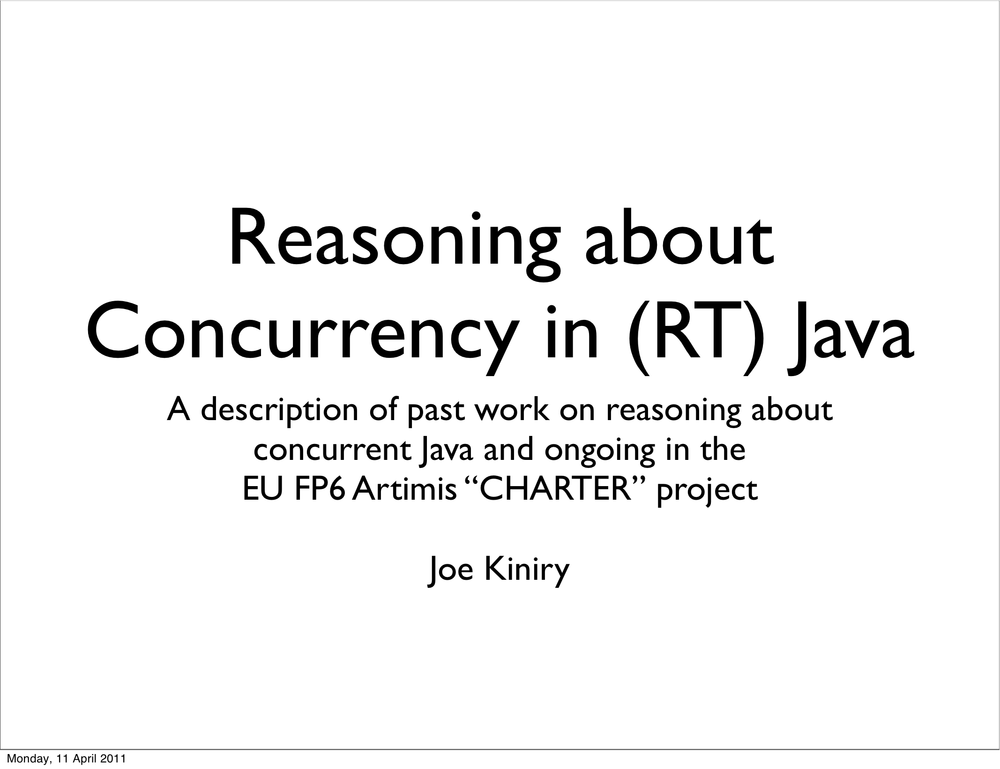

Reasoning about Concurrency in (RT) Java
Joe Kiniry gave a talk entitled Reasoning about Concurrency in (RT) Java to the TOMESO research team at ITU on Friday the 8th of April, 2011.
|  | Abstract:
In this talk I will discuss reasoning about concurrent Java programs from a practical, pragmatic point-of-view. One of my current projects, CHARTER focuses on how to take this work to the next level. |